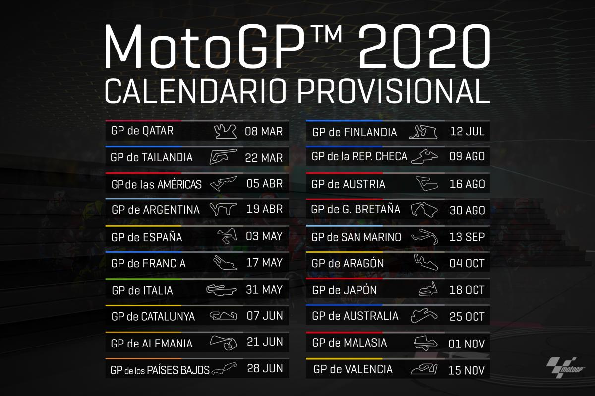
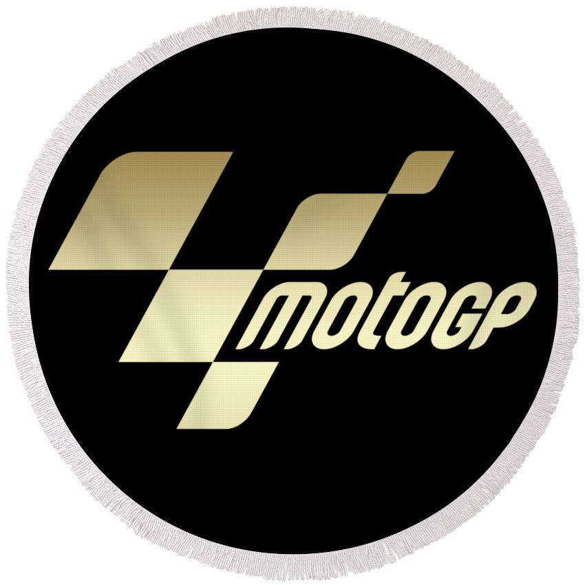

Motovelocidad a tu alcance
Piloto representante del equipo Repsol Honda, campeón del mundo 6 veces en categoría MotoGP
Leer másPiloto representante del equipo Ducati, sub-campeón del mundo 3 veces en categoría MotoGP
Leer másPiloto representante del equipo Movistar Yamaha MotoGP, campeón del mundo 6 veces en categoría MotoGP
Leer más
